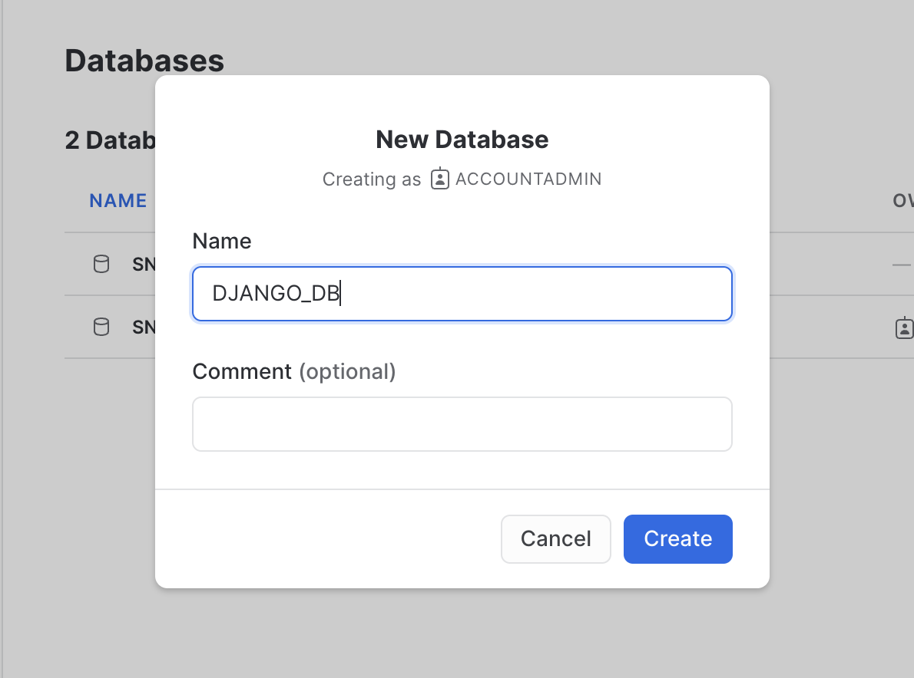
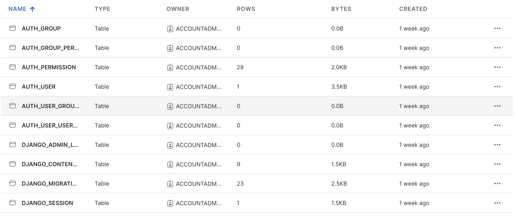

Django is a popular Python open-source web framework that allows developers to build web applications quickly and easily. Django provides many features and tools for web development, such as an Object-Relational Mapping (ORM) system for interacting with databases, an admin interface for managing application data, and much more. Django is commonly used with OLTP databases for its backend, but Snowflake can be a great backend for Django when you need the power of the data cloud behind your app.
In this Quickstart, we'll demonstrate how to use Snowflake as a backend for your Django application using the django-snowflake Python package. You'll build a sample Django app that connects to Snowflake and displays Snowflake data on the frontend.
Let's get started!
Prerequisites
- Python version >= 3.8
What You'll Do
- Create a database in Snowflake and load data into it
- Connect a Django application to Snowflake using the django-snowflake backend
- Create models in the Django app to represent the Snowflake data
- View the Snowflake data as an end user of the app
- Browse the Snowflake data using Django's admin interface
What You'll Need
- A Snowflake account (trial, or otherwise)
- A code editor
- A terminal
- git
What You'll Build
- A sample Django app that connects to Snowflake and displays Snowflake data on the frontend
First, clone Snowflake's sfguide-getting-started-django-snowflake repo and navigate into the cloned repo.
git clone https://github.com/Snowflake-Labs/sfguide-getting-started-django-snowflake.git && cd sfguide-getting-started-django-snowflake/
This repo contains a Django project called quickstart, which contains an app called trips representing Citibike trip data. To run the project, you'll need to install Django. If you don't have Django installed, you can install it using pip.
pip install django
Next, confirm that the app successfully runs. Change into the quickstart/ folder and run the following command:
python manage.py runserver
Navigate to localhost:8000/trips in your browser. If you see a success message ("Hello there! Welcome to the django-snowflake Quickstart!"), then you've successfully run the app. Ignore any warnings in your terminal about unapplied migrations – we'll address that in a later step of this Quickstart.
If you don't see the success message, you can troubleshoot errors using Django's documentation.
Let's create a database in Snowflake that we can connect to the Django app. If you don't already have a Snowflake account, now's a good time to create one by registering for a free 30-day trial.
In Snowflake, navigate to the "Databases" subsection within the "Data" section of the sidebar. At the top right, click the button to create a new database. Name the database "DJANGO_DB". We'll connect this database to the Django application in a later step.

To connect the Django app to the database you created in Snowflake, you'll need the django-snowflake package. You should install the version of django-snowflake that corresponds to your version of Django. To check the version of Django you have installed, run the following command:
python -m django --version
For example, if you have version 4.1.x of Django installed, you should install the corresponding version of django-snowflake:
pip install django-snowflake==4.1.*
Note that the minor release number of Django doesn't correspond to the minor release number of django-snowflake. Use the latest minor release of each.
Let's configure the project's settings to use Snowflake as the backend. Change into the quickstart/ folder (within the parent quickstart/ folder, i.e., quickstart/quickstart/) and take a look at what's inside. You'll notice several files associated with the project. Using your preferred code editor, open the settings.py file. This file contains the database settings that we'll configure.
Scroll down to the DATABASES dictionary defined on line 77. It should look something like this:
DATABASES = {
'default': {
'ENGINE': 'django.db.backends.sqlite3',
'NAME': BASE_DIR / 'db.sqlite3',
}
}
The DATABASES dictionary is a collection of named databases that are configured for the project. By default, Django projects are configured to use SQLite as a backend (note the default database entry in the DATABASES dictionary, which uses a SQLite engine and points to the db.sqlite3 file in the root of the project).
Let's set Snowflake as the default backend. Configure Django to connect to the Snowflake database you created by using the code below:
DATABASES = {
'default': {
'ENGINE': 'django_snowflake',
'NAME': 'DJANGO_DB',
'SCHEMA': 'PUBLIC',
'WAREHOUSE': 'COMPUTE_WH',
'USER': 'YOUR_USERNAME',
'PASSWORD': 'YOUR_PASSWORD',
'ACCOUNT': 'YOUR_ACCOUNT_IDENTIFIER',
# Include 'OPTIONS' if you need to specify any other
# snowflake.connector.connect() parameters.
# https://docs.snowflake.com/en/user-guide/python-connector-api.html#connect
'OPTIONS': {},
}
}
This configuration allows us to connect to Snowflake using django-snowflake. We're specifically connecting to the DJANGO_DB database, using the PUBLIC schema, and using the COMPUTE_WH warehouse. Be sure to replace the YOUR_USERNAME, YOUR_PASSWORD, and YOUR_ACCOUNT_IDENTIFIER with the correct, corresponding values. If you need help locating your account identifier, see Account Identifiers. Save your changes.
That's it! You don't have to run any additional commands to connect to Snowflake. If you've successfully connected, your terminal will display a message like "System check identified no issues (0 silenced).". If the connection was unsuccessful, your terminal will output the associated errors, which you can then troubleshoot.
You've probably seen that pesky warning about unapplied migrations several times in your terminal by now. Let's address them.
Navigate up one level to the quickstart/ folder (i.e., the one that contains the manage.py file). Run the migrations with the following command:
python manage.py migrate
This command will run the default Django migrations, and write several Django-specific tables to your DJANGO_DB in Snowflake. Navigate to the DJANGO_DB database in Snowflake and expand the tables section (under the PUBLIC schema). You should see all of the tables that Django wrote to the database. If you don't see them, click the "..." near the top and click "Refresh".
These tables contain Django-specific information required to run your application properly. Without these tables, your app might behave in unexpected ways. Feel free to peruse the tables, but do not modify them.

Let's load some fun data into the database that we can use in the Django app. We're going to load data into DJANGO_DB by doing the following:
- Creating a stage in Snowflake for the data that we'll load. The data is hosted on AWS S3 and is publicly accessible (i.e., no credentials required).
- Creating a worksheet and defining the target table and file format for ingesting data into the database.
- Copying the data from the stage into the target table.
Let's load!
Create a stage
Within Snowflake, navigate to your DJANGO_DB database and expand it. Click on the PUBLIC schema. Click the "Create" button in the top right of the screen, and, in the drop down, select "Stage > Amazon S3". A "Create Securable Object" modal will appear. In the editor within the modal, replace the entire template with the following:
create stage citibike_trips
url = 's3://snowflake-workshop-lab/citibike-trips-csv/';
The credentials field in the stage template is not needed since the data is publicly accessible.
Click "Create Stage". If successful, you'll see a "CITIBIKE_TRIPS" stage created under the PUBLIC schema.
Define the target table and file format for data ingestion
Next, let's define the table and file format that we'll use for the data we'll load.
Navigate to "Worksheets" in the left panel of the Snowflake UI. Start a new worksheet using the "+ Worksheet" button in the top right. Ensure you have the correct database (DJANGO_DB), schema (PUBLIC), and warehouse (COMPUTE_WH) set for your worksheet. Add the following code and run it all:
create or replace table trip
(trip_id integer autoincrement start 1 increment 1,
tripduration timestamp,
starttime timestamp,
stoptime timestamp,
start_station_id integer,
start_station_name string,
start_station_latitude float,
start_station_longitude float,
end_station_id integer,
end_station_name string,
end_station_latitude float,
end_station_longitude float,
bikeid integer,
membership_type string,
usertype string,
birth_year integer,
gender integer);
create or replace file format csv type='csv'
compression = 'auto' field_delimiter = ',' record_delimiter = '\n'
skip_header = 0 field_optionally_enclosed_by = '\042' trim_space = false
error_on_column_count_mismatch = false escape = 'none' escape_unenclosed_field = '\134'
date_format = 'auto' timestamp_format = 'auto' null_if = ('')
comment = 'file format for ingesting data into snowflake';
These commands will create the target table and define the file format to help ingest data. If you'd like to see the table created, navigate to the TRIP table in your DJANGO_DB database. You'll note that it is empty. We're going to populate it next.
Copy data into the target table
In the same worksheet, add the following command to the bottom of the file and run it:
copy into trip (tripduration, starttime, stoptime, start_station_id, start_station_name, start_station_latitude, start_station_longitude, end_station_id, end_station_name, end_station_latitude, end_station_longitude, bikeid, membership_type, usertype, birth_year, gender) from @citibike_trips file_format=csv PATTERN = '.*csv.*';
The command will process the data files from the stage and copy them into the TRIP table created earlier. If you navigate to the "Data Preview" tab for the TRIP table, you'll see a sample of the data in the table (you may need to refresh the preview).
Great, we now have some data to play with in the database!
For demonstration purposes, the app includes a view that will render a sample of the trip data once everything is properly configured. Navigate to localhost:8000/trips/from/graham-conselyea. You should encounter an error! That's because although we've connected the app to Snowflake, we haven't yet created the Django models necessary to represent the trip data in the app. Let's create those models now.
A model is a representation of your data in the Django app. Creating a model based on the data in the TRIP table will allow you to programmatically use the data throughout the Django app.
Django has a handy command called inspectdb that automatically generates Django models for you based on a table's metadata and schema. We'll use this command to generate a Trip model that we'll use in the app.
In the parent quickstart/ folder, run the following command:
python manage.py inspectdb TRIP > generated_models.py
This command will inspect the TRIP table in the DJANGO_DB database, generate models based on the table, and dump the models into a file called generated_models.py.
Open the generated_models.py file. If the model generation was successful, the file will define a class called Trip, along with additional fields based on the columns of the table. In addition, note the comments inserted at the top of the file during model generation. Here's a sample of the file:
class Trip(models.Model):
trip_id = models.BigAutoField(blank=True, null=True)
tripduration = models.TextField(blank=True, null=True) # This field type is a guess.
# Rest of code omitted for brevity
To use this model in the app, we'll need to add the Trip model definition to the TRIP app in the quickstart Django project. Copy the contents of generated_models.py. Next, open the quickstart/trips/models.py file and replace everything inside the file with what you copied from generated_models.py.
Finally, let's specify that trip_id should be used as the primary key for the data. Modify the line that defines trip_id as shown below and save your changes.
trip_id = models.BigAutoField(blank=True, primary_key=True)
Because we've created a model, we'll need to also create – not run – a migration. This migration will record the creation of the model. In your terminal, from the root quickstart/ folder, run the following command:
python manage.py makemigrations trips
This command will create a migrations/ folder within the trips/ folder and populate it with files that correspond to changes to the model. This command also creates the initial migration in a file called 0001_initial.py. Feel free to peruse it if you're curious, but do not modify it.
We're now ready to run the migration. Run the following command:
python manage.py migrate trips
This will run the migration defined in 0001_initial.py.
That's it! We can now use this model through the Django app.
As mentioned in a previous step, the app includes a view that will render a sample of the data once everything is properly configured (i.e., creating a model). We've since created the model necessary to use the trip data in the app, so we can now view the bike trip data as if we were an end user of the app.
Navigate to localhost:8000/trips/from/graham-conselyea. If you've successfully configured Snowflake as a backend and ran the necessary migrations, you should see a table titled "10 Trips from the ‘Graham Ave & Conselyea St' Station" on the page. This is just a sample of the data – there are all sorts of cool things you could do with the data if you wanted to.

For some context, we configured the view as follows:
- The view is defined in /trips/views.py, as
class GrahamConselyeaView. In this view, we programmatically access and return the trip data that is displayed on the front end. We're able to do this by operating on theTripmodel we defined earlier (which is based on the trip data in Snowflake). - We defined a new path in the
urlpatternslist in /trips/urls.py, which references the view defined in /trips/views.py. - The HTML is defined in the trips-from-graham-conselyea.html file, in the /trips/templates/trips folder.
For more information on views in Django, see Writing Views in the Django documentation.
If you're an admin of a Django app, you can browse models in an admin UI that Django provides out of the box. To view the data as an admin, you'll need to register as a super user of the app, and also register the model to the admin site.
First, let's create a super user. Run the following command:
python manage.py createsuperuser
You'll be prompted for a username, email (press "Enter" on your keyboard to leave it blank), and password. You can set these to any values that you like, but be sure to jot them down so that you can log into the admin UI.
Navigate to localhost:8000/admin in your browser. You'll be met with a login page. Enter the credentials you defined for your super user and log in. If successful, you'll see the "Django administration" UI. Note the models shown in the UI ("Groups" and "Users"). These models were created as part of the default Django migrations you ran earlier. If you click on the "Users" model, you should see an entry for the super user you just created!
Next, let's register the Trip model. Navigate to quickstart/trips/admin.py. Add the following to the file:
from .models import Trip
admin.site.register(Trip)
Save the file and reload the admin page in your browser. If successful, you should see a new section in the UI called "Trips", with a "Trips" entry underneath. Click on the "Trips" entry. Voila! This is the trip data that we imported into the app from Snowflake. Each object represents a row in the TRIP database. Click on the object to browse its contents. Note that, if you wanted to, you could modify the data using this admin UI.

Congratulations! In just a few minutes, you were able to configure a Django app to use Snowflake as a backend using django-snowflake. What we covered here is only a sample demonstration of what's possible – there are all sorts of great things that you can build when using Snowflake as a backend in Django. What will you build?
We would love your feedback on this Quickstart! Please submit your feedback using this form: Feedback Form
What we've covered
- Creating a database in Snowflake and loading data into it
- Connecting a Django application to Snowflake using the django-snowflake backend
- Creating models in the Django app to represent the Snowflake data
- Browsing the Snowflake data using Django's admin interface
- Viewing the Snowflake data as an end user of the app